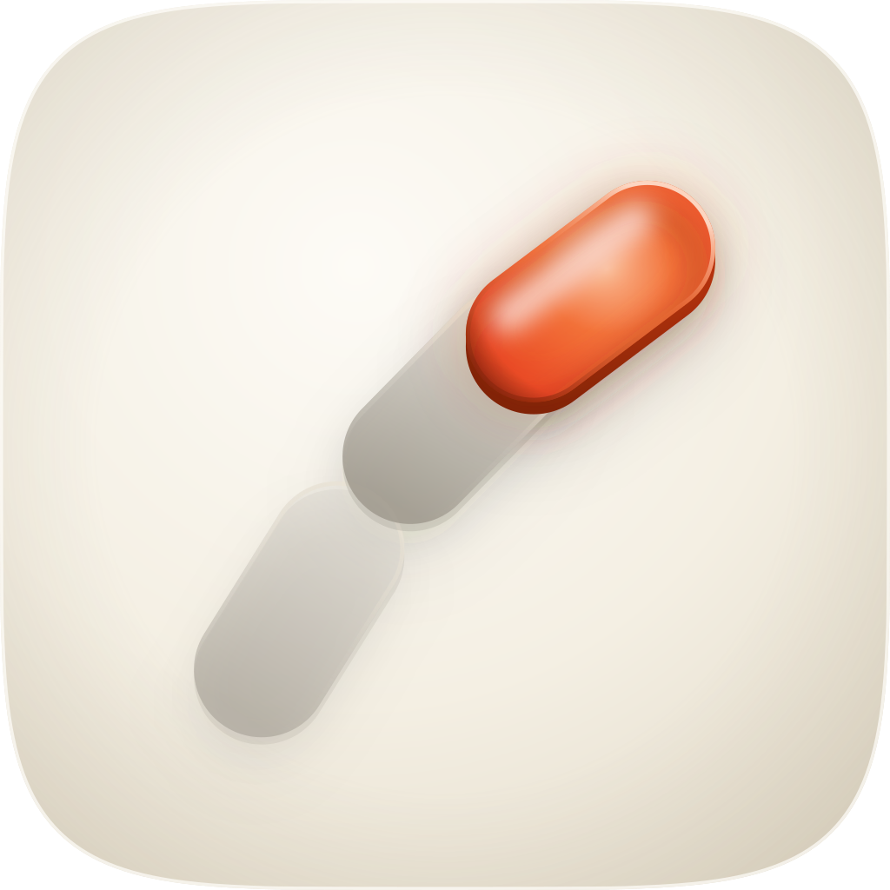
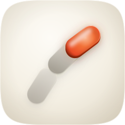
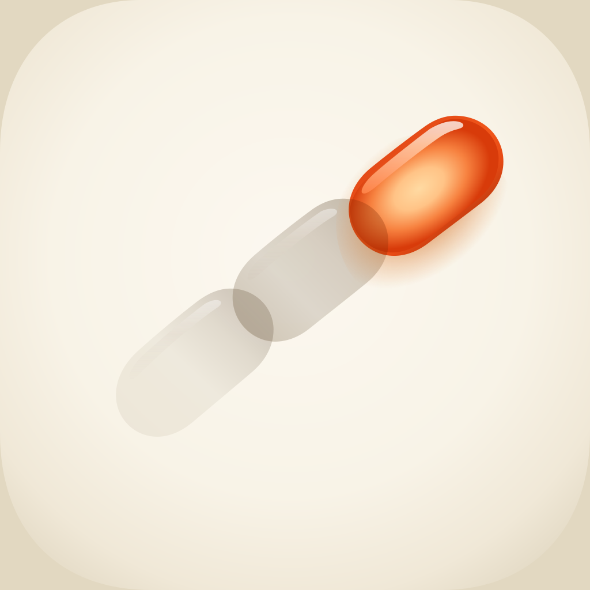
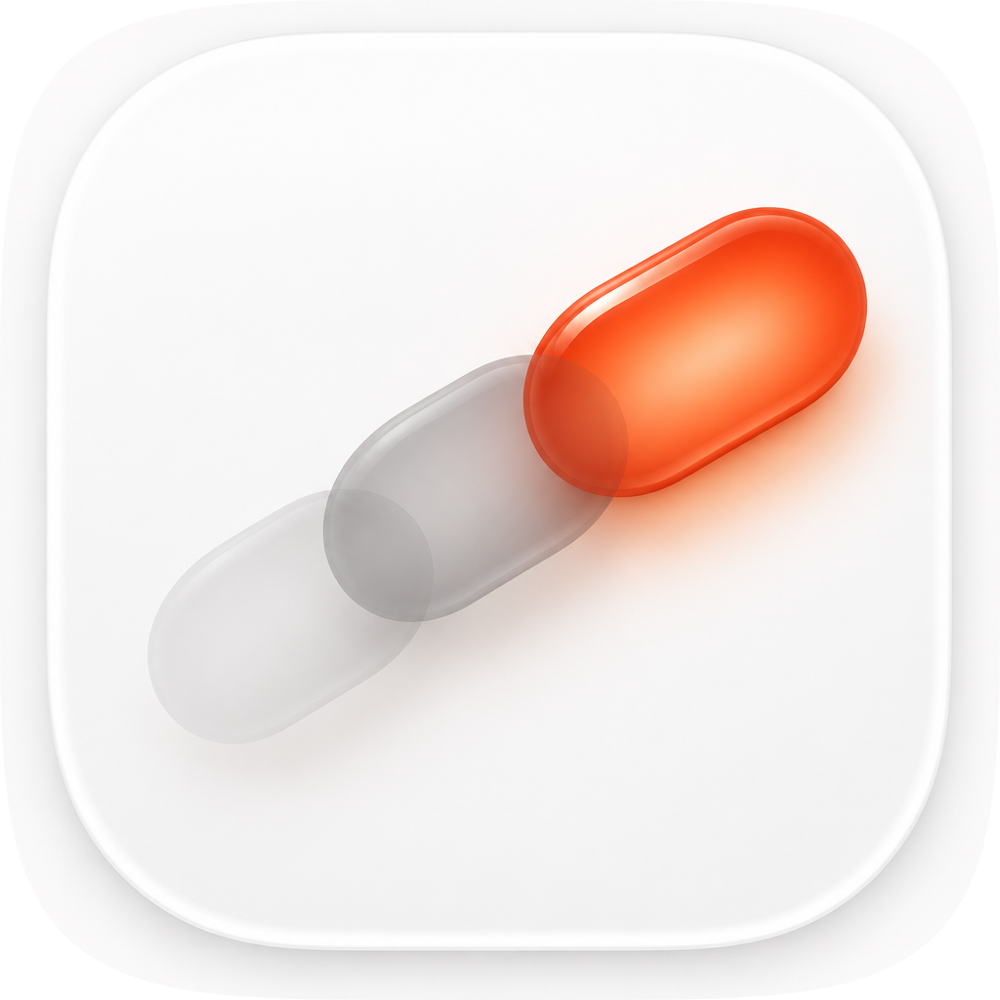
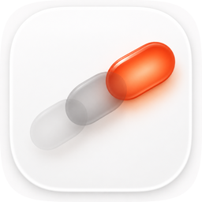
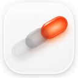

| Take | Hero at 1024, then renders at 128 / 64 / 48 / 32 / 16 css px (2× retina sources), plus the 16px squint magnified | Rubric | Verdict |
|---|---|---|---|
| engineA · icon.svghand-authored layered SVG from build_icon.py — SHIPS |   |
11 / 12 | Passes checks 1-4 on real renders: shared squircle from create-mac-icon, the three frames read as separate shapes at 32 px and still as a grey trail into a vermilion capsule at 16 px. One key light, two hue families (warm neutrals and the vermilion accent), porcelain ground matched to design-craft and ux-craft. Loses a point on depth coherence: the landed capsule's inner glow is flatter than the raster's. Salvaged from engineC: lighter frosted ghosts, a shared capsule orientation along the path, a broader specular band and a warm bloom on the ground. |
| engineB · icon-engineB-arrow-431b80.svgArrow 2 vector take |  |
8 / 12 | Good material on the landed capsule (pale core, glossy sliver), but fails check 4: at 16 px the two ghosts fade to a faint smudge barely darker than the ground, so the tile reads as one orange pill rather than successive frames. Its tile edge also crops tight to the canvas. Its pale core gradient informed the master's ACCENT_CORE stop. |
| engineC · icon-engineC-82b1d4.pngGPT Image raster, corpus-referenced (apple-06, apple-12, apple-28) |    |
9 / 12 | Best material of the three: see-through frosted ghosts, a gel capsule lit from inside, warm light thrown on the ground. Loses on family fit and mask discipline: a pure white tile rather than the family's porcelain, and the generated tile sits inside the squircle mask, so a second tile edge shows at every size. It is the material target the master was edited towards, never the shipped file. |